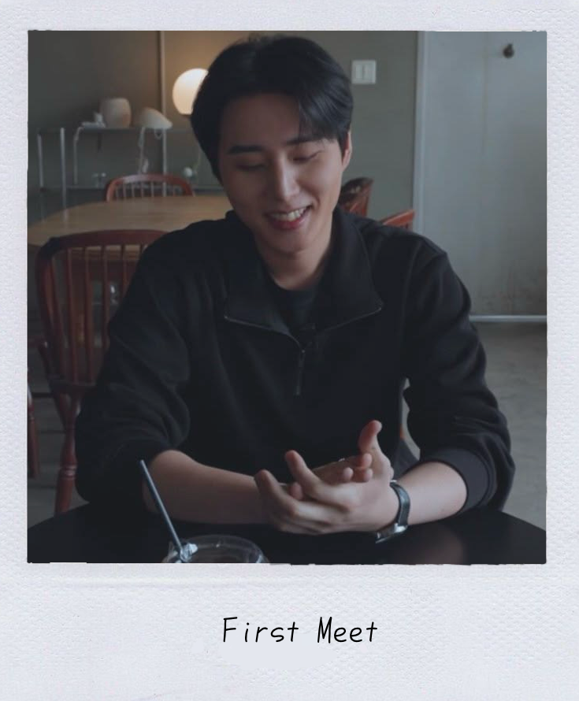
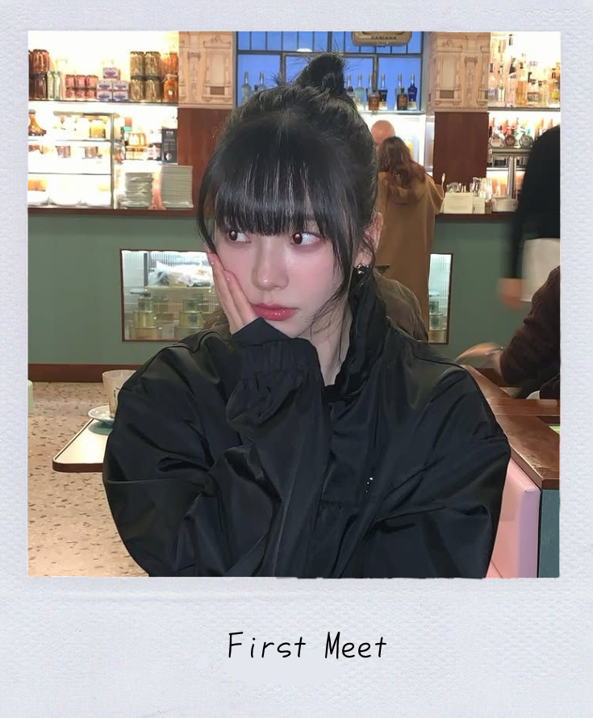
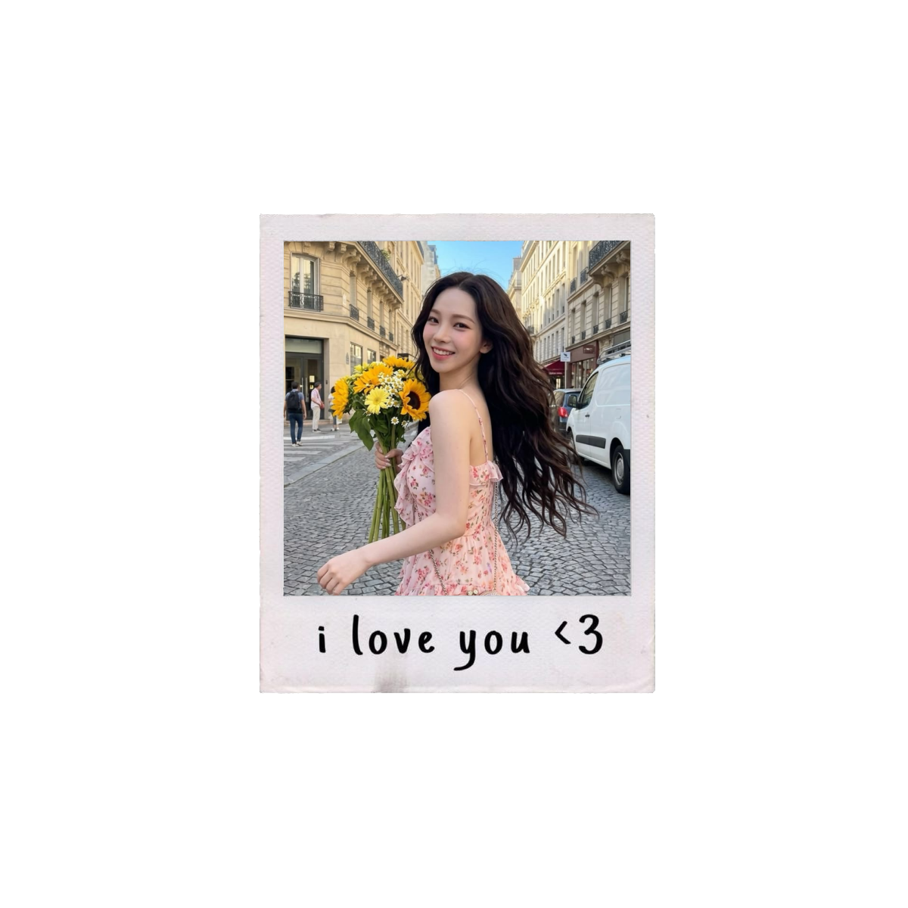
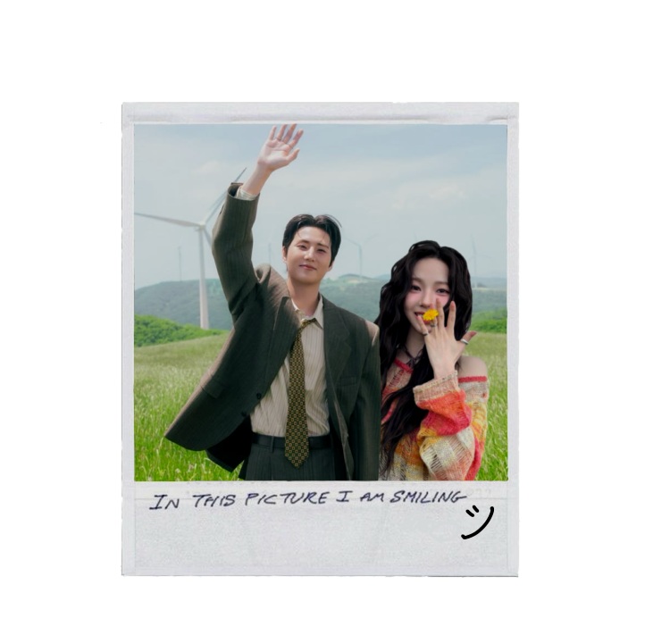

Diantara banyaknya kemungkinan yang terjadi, pada saat itu kakak memutuskan untuk ikut posting kriteria WGL yang diadakan oleh @Beserpe. Kakak cek postingan WGL kakak untuk tahu siapa saja yang reply. Kakak temukan uname dedek disana reply dengan gambar text lucu dan foto dedek. Karena penasaran, kakak stalk akun dedek saat itu. Kakak sudah menemukan siapa yang kakak pilih, dan semakin yakin setelah dedek tetap reply sampai hari terakhir berikan kakak sarapan [pribadi yang mudah luluh jika diberi makan] 🤭
Akhirnya kita verif tuh, awal-awal kakak canggung banget hahaha. But we have so much in common, our humour is matched, the topics we talk about. Sometimes I do make you feel sad, upset, and angry, but I'm really glad that you still choose to stay beside me and go through whatever scenario might happen.
Terima kasih sudah sabar, sudah sayang, sudah perhatian, sudah marah, sudah sedih, sudah kecewa, sudah bahagia, dan sudah cerita semuanya ke kakak apa yang dedek rasain. Kedepannya pasti tidak akan selalu mudah. Kakak harap kita berdua selalu ingat apa yang sudah kita lalui hingga sampai di sini. Honestly having you around makes everything so much better. I love you dedek jiminie cayang.


Hari di mana semua rasa canggung campur aduk sama rasa senang, setelah kita berdua verif WGL. Definitely a day to remember!
Eits, tunggu dulu! Tidak bisa langsung lanjut begitu saja. Kakak perlu jawaban jujur dari dedek untuk beberapa pertanyaan ini. No cheating, just your honest feelings. Ready? Kakak akan baca semua jawaban dedek loh 🤭

Jawaban dedek sudah aman tersimpan! I love you sayang. Seperti yang pernah kakak bilang ke dedek. Kakak merasa sangat beruntung bisa bertemu dan dekat dengan dedek. Kita saling berbagi cerita, berbagi kejahilan, pelukan, dan ciuman. Walau dedek bilang dedek tidak sebaik itu, tapi menurut kakak dedek itu baik. Terima kasih untuk kasih sayang, perhatian, pengertian, dan support yang dedek berikan. Kakak akan berusaha memberikan yang sama untuk dedek. Kita sama-sama belajar ya, sayang?
File selanjutnya mungkin adalah file yang sudah dedek antisipasi dan nantikan. Karena file ini sangat penting untuk kita berdua. Sebelum dedek buka, coba tarik napas yang dalam dulu. Siap? Silakan buka filenya, sayang.
Setelah semua yang kita lewati, kakak hanya ingin satu hal, eh tidak. Kakak mau melakukan banyak hal bersama dedek. Maka dari itu, kakak ingin terus berada di samping dedek. Menjadi pendengar semua cerita dedek, penting atau tidak penting. Menjadi orang yang suka dedek jahili. Jadi tempat dedek pulang dan manja-manja dengan kakak. Kakak mau melawati semua hal bareng-bareng, di sini bersama dedek.
Untuk melengkapi memori kita hari ini, ada satu hal yang mau kakak kasih secara langsung. Coba alihkan pandangan dedek dari layar ini dan lihat ke kakak sekarang...
So, dedek jiminie cayang yang cantik, gemes, seksi, dan lucu... Will you be my girlfriend?

Request to enter heart: ACCEPTED. Status: Officially Yours.
Terima kasih sayang, sudah izinkan kakak untuk masuk ke hati dedek secara resmi dan punya tempat spesial di hati dedek. Cincin yang sekarang ada di jari dedek adalah tanda kalau kakak akan selalu berusaha buat bahagiakan dedek, cayang. I love you, my pacar jiminie cayang! 🥰
Kakak mau lihat reaksi dedek. Coba kirim pesan ke X kakak sekarang sayang. Sebagai bukti kalau kakak dan dedek sudah resmi pacaran! Sudah TIDAK HTS ya sayang. ˵• ̀⩊•́˵